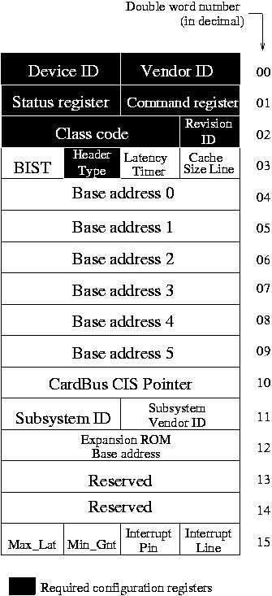

RTEMS Network Supplement
RTEMS Network Supplement
This chapter describes rapidely the PCI interface of this Ethernet controller. The board we have chosen for our PC386 implementation is a D-Link DFE-500TX. This is a dual-speed 10/100Mbps Ethernet PCI adapter with a DEC21140AF chip. Like other PCI devices, this board has a PCI device's header containing some required configuration registers, as shown in the PCI Register Figure. By reading or writing these registers, a driver can obtain information about the type of the board, the interrupt it uses, the mapping of the chip specific registers, ...
On Intel target, the chip specific registers can be accessed via 2 methods : I/O port access or PCI address mapped access. We have chosen to implement the PCI address access to obtain compatible source code to the port the driver on a PowerPC target.

On RTEMS, a PCI API exists. We have used it to configure the board. After initializing
this PCI module via the pci_initialize() function, we try to detect
the DEC21140 based ethernet board. This board is characterized by its Vendor
ID (0x1011) and its Device ID (0x0009). We give these arguments to the
pcib_find_by_deviceid
function which returns , if the device is present, a pointer to the configuration
header space (see PCI Registers Fgure). Once this operation performed,
the driver
is able to extract the information it needs to configure the board internal
registers, like the interrupt line, the base address,... The board internal
registers will not be detailled here. You can find them in DIGITAL Semiconductor 21140A PCI Fast Ethernet LAN Controller - Hardware Reference Manual.


 RTEMS Network Supplement
RTEMS Network Supplement
Copyright © 1988-2008 OAR Corporation